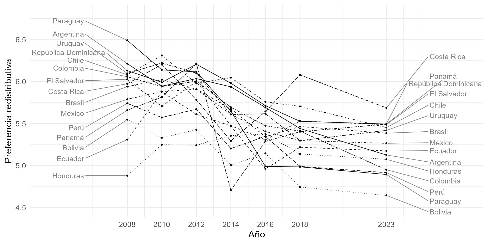
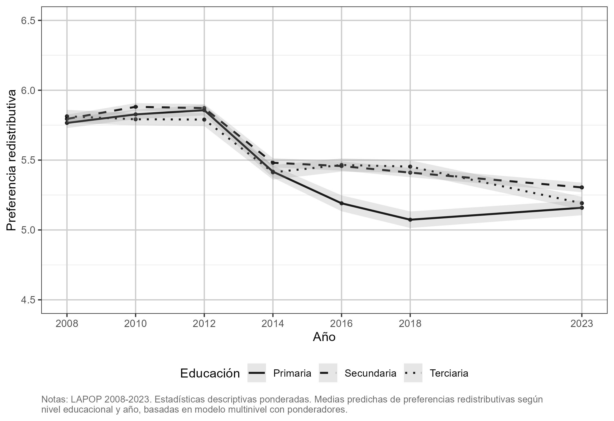
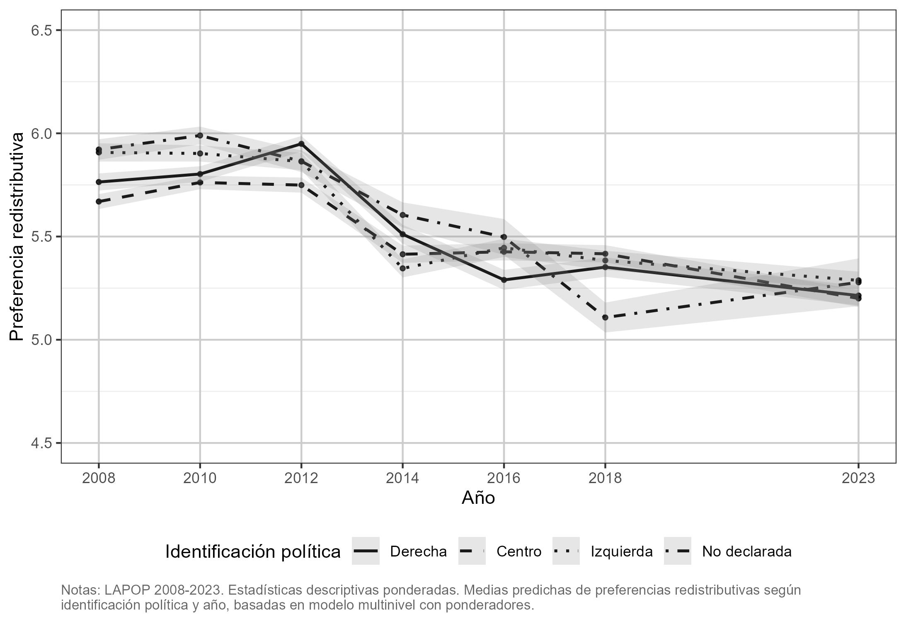
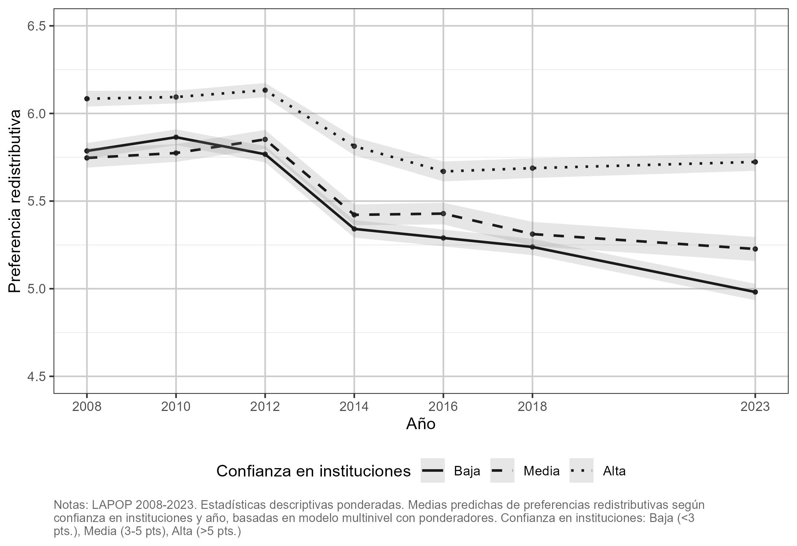
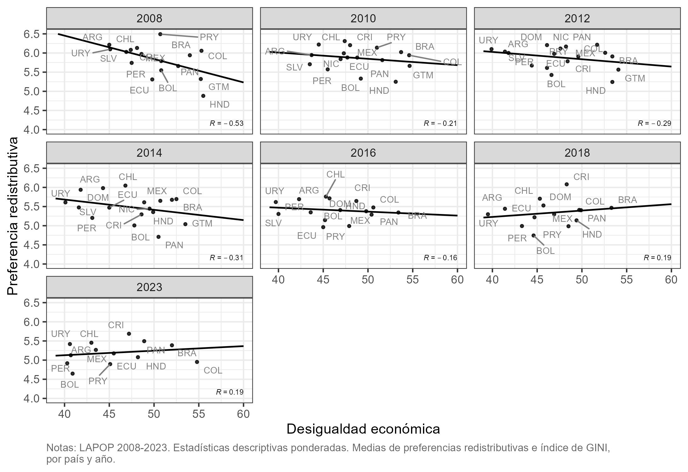
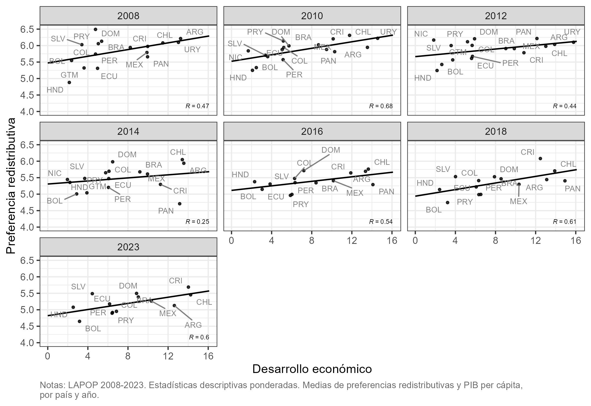
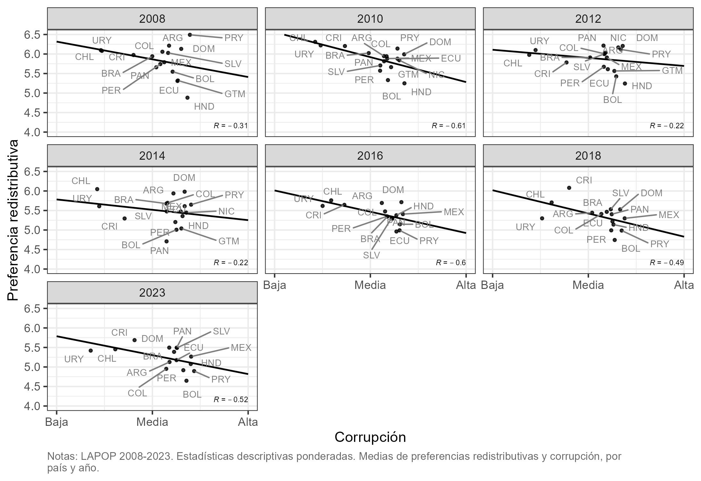
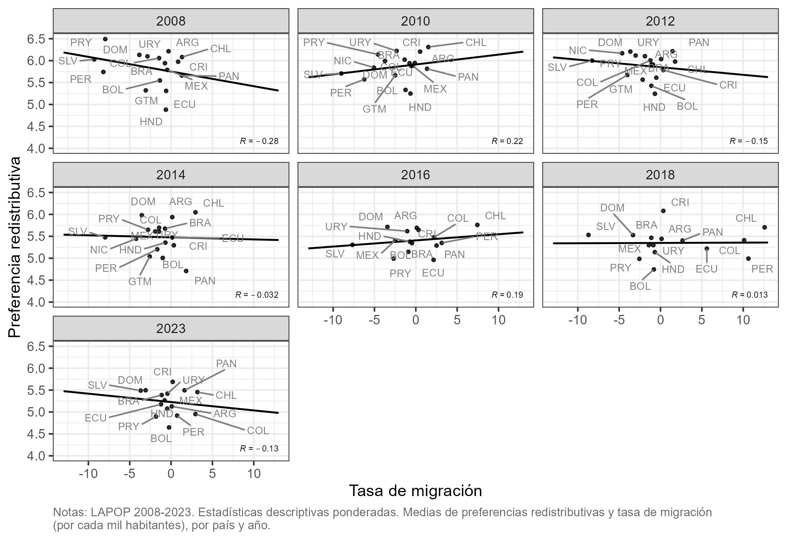

Resultados
Preferencias redistributivas
La Figure 1 muestra la media de las preferencias redistributivas en cada país considerando todos los años analizados. Destaca que si bien el rango de valores de cada país no varía demasiado (todos los países se encuentran entre 5 y 6), Bolivia y Honduras son los países con la menor media de preferencias redistributivas para el periodo 2008-2023, mientras que Chile y República Dominicana son los países con la media de preferencias redistributivas más alta para el periodo analizado. Considerando que ningún país se encuentra en promedio por debajo de 5, se puede indicar que existe un cierto consenso generalizado en América Latina sobre el papel que debería tener el Estado en la redistribución de recursos.
la Figure 2 muestra el panorama general de cómo han cambiado las preferencias redistributivas para cada país entre 2008 y 2023. Si bien cada línea representa a un país, donde cada uno tiene sus propias especificidades y tendencias, es posible evidenciar que en América Latina en su conjunto presenta una pequeña disminución, en promedio, en el apoyo a políticas redistributivas. Por ejemplo, Chile (que en la Figure 1 era el promedio más alto en este periodo) en 2008 comienza con un promedio sobre 6 y termina en 2023 con un promedio cercano a 5,4. Asimismo, existen casos más extremos como Paraguay, que en 2008 es el promedio más alto con un valor cercano a 6,5 y en 2023 es uno de los promedios más bajos con un valor menor a 5.

Factores individuales asociados a las preferencias redistributivas
Interés propio
Edad
La Figure 3 muestra la relación entre la media de edad y las preferencias redistributivas en América Latina a lo largo de varios años: 2008-2023. En cada panel se observa cómo cambia la media de preferencias redistributivas en función de la media de edad de los encuestados para distintos países en cada uno de esos años. Cada punto representa un país, y la línea de regresión sugiere la tendencia general de la relación entre estas dos variables.
En la mayoría de los años (excepto 2012 y 2018), existe una correlación positiva moderada entre la media de edad y las preferencias redistributivas, es decir, a medida que la edad media de los encuestados en un país aumenta, también lo hace la media de apoyo a la redistribución. El coeficiente de correlación (R) varía en cada año, oscilando entre valores bajos, como 0.24 en 2012 y 2018, y valores más altos, como 0.54 en 2010 y 0.53 en 2016. Estos valores indican que, en algunos años, la relación entre la edad media y las preferencias redistributivas es más fuerte (2010, 2016), mientras que en otros es bastante débil (2012, 2018).
Educación
La Figure 4 muestra la relación entre el nivel educativo y las preferencias redistributivas desglosado por año desde 2008 hasta 2023, con mediciones en intervalos de dos años entre 2008 y 2018, y una última medición en 2023. En términos generales, se observa una estabilidad en las preferencias redistributivas en los primeros años (2008-2014), con una ligera tendencia ascendente a medida que aumenta el nivel educativo. Sin embargo, a partir de 2016, el gráfico muestra un incremento más claro en las preferencias redistributivas entre quienes tienen educación secundaria y terciaria, en comparación con quienes solo tienen educación primaria. Este patrón parece mantenerse hasta 2023, aunque las diferencias tienden a suavizarse ligeramente en este último año. Adicionalmente, las diferencias entre niveles educativos, especialmente entre la educación secundaria y terciaria, son particularmente pronunciadas en los años posteriores a 2016. Así, la relación entre educación y preferencias redistributivas ha evolucionado con el tiempo, mostrando una mayor inclinación por la redistribución entre los más educados en los años recientes. Así, esta evidencia descriptiva muestra de que el nivel educativo está asociado con las actitudes hacia la redistribución, pero también muestra que esta relación ha cambiado a lo largo del tiempo, destacando una posible divergencia en los últimos años.

Valores
Identificación política
La Figure 5 muestra que, a lo largo de los años, existe una tendencia general donde aquellos que se identifican con la izquierda muestran niveles consistentemente más altos de preferencias redistributivas en comparación con quienes se sitúan en la derecha. Sin embargo, las diferencias entre los grupos parecen ser relativamente moderadas en los primeros años (2008-2012), con una ligera variación en 2012, donde los encuestados de la izquierda y el centro muestran una leve disminución en sus preferencias redistributivas, mientras que las personas de derecha se mantienen estables. En los años posteriores (2016-2023), las preferencias redistributivas de los distintos grupos políticos se estabilizan, con un ligero aumento entre quienes se identifican con la izquierda y el centro, mientras que las personas de derecha muestran un patrón relativamente plano. En estos últimos años, la categoría “No declarada” también presenta un leve incremento en sus preferencias redistributivas, situándose más cerca de las actitudes de la izquierda. En conjunto, esta evidencia descriptiva sugiere que la posición política sigue siendo un predictor relevante de las actitudes redistributivas, con una clara tendencia a que quienes se identifican con la izquierda tengan actitudes más favorables hacia la redistribución, aunque las diferencias entre los grupos no parecen haber aumentado significativamente en los últimos años.

Confianza en instituciones
La Figure 6 muestra el cambio en la relación entre la confianza en instituciones y las preferencias redistributivas en América Latina entre los años 2008-2023. En la mayoría de los años, la relación entre confianza en las instituciones y preferencias redistributivas es muy débil o prácticamente inexistente, lo que se refleja en los bajos coeficientes de correlación (R). Esto sugiere que la confianza en las instituciones no es un factor determinante para las preferencias redistributivas en la mayoría de los países de América Latina durante los años analizados. Los únicos años en que se observa una correlación relativamente más fuerte es en 2012 (R=0.51) y 2023 (R=0.58), lo que indica que, en estos años, los países con mayor confianza en las instituciones tienden a mostrar un mayor apoyo a la redistribución.

Determinantes nacionales
Económicos
Desigualdad económica
La Figure 7 muestra la relación entre el índice de Gini las preferencias redistributivas en América Latina para los años 2008-2023. Durante los primeros años (2008-2016), la correlación entre el índice de Gini y las preferencias redistributivas es mayormente negativa, aunque con diferentes magnitudes. Esto indica que en estos años, los países con mayor desigualdad tienden a mostrar menores niveles de apoyo a la redistribución. Por el contrario, en los años siguientes (2018-2023), la tendencia cambia, mostrando una correlación positiva aunque débil, lo que sugiere que en estos años, los países con mayores niveles de desigualdad comenzaron a mostrar un mayor apoyo a la redistribución.

Desarrollo económico
La Figure 8 muestra la relación entre el Producto Interno Bruto (PIB) per cápita y las preferencias redistributivas en América Latina entre los años 2008-2023. En casi todos los años (excepto 2014), la relación entre el PIB per cápita y las preferencias redistributivas es positiva, lo que sugiere que los países con mayor nivel de desarrollo económico tienden a mostrar un mayor apoyo a la redistribución. Los coeficientes de correlación más altos se observan en 2010 (R = 0.68), 2018 (R = 0.61) y 2023 (R = 0.60), lo que indica que en estos años la relación entre el PIB per cápita y las preferencias redistributivas fue más relevante.

Político-institucionales
Corrupción
La Figure 9 muestra la relación entre la percepción de corrupción y las preferencias redistributivas en América Latina entre 2008 y 2023. En todos los años analizados, la relación entre la percepción de corrupción y las preferencias redistributivas es negativa, lo que sugiere que en los países donde la percepción de corrupción es más alta, el apoyo a las políticas redistributivas tiende a ser más bajo. Esta correlación negativa es más fuerte en algunos años que en otros, pero se mantiene constante a lo largo del tiempo. Los años 2010, 2016 y 2023 destacan por tener coeficientes de correlación más negativos (R = -0.61, -0.60, -0.52, respectivamente), lo que sugiere una relación más marcada entre mayores niveles de corrupción percibida y un menor apoyo a la redistribución.

Socioculturales
Tasa de migración
La Figure 10 muestra la relación entre la tasa de migración y las preferencias redistributivas en América Latina entre 2008 y 2023. Como se observa, no existe un patrón constante en el tiempo entre ambos indicadores. Si bien tanto al comienzo como al final del período estudiado (años 2008 y 2023, respectivamente), se evidencia una relación negativa entre inmigración y apoyo a la redistribución (R = -0.28, -0.13), en los años intermedios esta asociación se ve reducida, tornándose algunas veces incluso positiva. En 2023, por ejemplo, países con similares tasas de migración, como Bolivia y Costa Rica, experimentan un acuerdo con la redistribución promedio sumamente diferente entre sus ciudadanos. La ambivalencia de esta relación a lo largo de los años estudiados pone en entredicho una directa asociación entre mayores niveles de inmigración y menores niveles de apoyo a la acción redistributiva del Estado al interior de la región.

Análisis de regresión multinivel
En la Figure 11 se presentan los coeficientes de regresión de un análisis de regresión multinivel. Esta técnica se utiliza cuando los datos están organizados en diferentes niveles jerárquicos (o anidados). En este caso, tenemos datos sobre las preferencias redistributivas de invididuos en varios países de América Latina a lo largo del tiempo. De esta forma, cada nivel jerárquico permite capturar las diferencias dentro y entre los países, así como entre los diferentes años.
En la Figure 11 se presentan los coeficientes de regresión del análisis multinivel. En este modelo de regresión, viendo los coeficientes asociados al tiempo, se presentan resultados mixtos: comparado con el 2008, el 2010 y el 2012 tienen un coeficiente negativo pero que no es estadísticamente significativo. Por el contrario, los años 2014, 2016, 2018 y 2023 presentan un coeficiente negativo (que se va haciendo más negativo en el tiempo), con una relación que es estadísticamente sigificativa (p<0.001). En cuanto a los ingresos, el coeficiente de ingreso es positivo pero no es estadísticamente significativo.
Siguiendo con el orden de los coeficientes, primero los hombres tienen un coeficiente positivo que indica que ellos apoyan más la redistribución en comparación con las mujeres (p<0.01). Segundo, el coeficiente negativo de la edad indica que a medida que las personas envejecen, el apoyo a la distribución disminuye ligeramente. Tercero, se incluye el nivel educativo, que representa que las personas con mayor nivel educativo (en comparación con quienes solo tienen educación primaria), tienden a preferir mayor redistribución. Cuarto, en comparación con la gente de derecha, las personas de centro no tienen diferencias estadísticamente signicatva, mientras que las personas de izquierda y aquellas que no se identifican muestran un mayor apoyo a la redistribución (p<0.001). En quinto lugar, el coeficiente de confianza en instituciones, es positivo que indica que a mayor confianza en las instituciones, el apoyo a la redistribución también aumenta. Finalmente, se incluyen también las variables a nivel nacional como índice Gini, PIB y corrupción, donde el índice GINI tiene un coeficiente negativo pero que no es estadisticamente negativo, el coeficiente positivo del PIB per cápita indica que el apoyo a la redistribución es mayor en estos países y el índice de corrupción tiene un coeficiente negativo, pero que no es estadísticamente significativo.